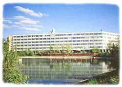

Моя Первая страница
Наш Университет
Российский Государственный Гуманитарный Университет
Стиль Заголовка
Профессорско-преподавательский состав Университета насчитывает более 700 штатных преподавателей и около 400 совместителей, - специалистов из учреждений РАН, вузов Москвы и других научных учреждений. В РГГУ работают 70 академиков и членов-корреспондентов российских и иностранных академий, 214 докторов, 573 кандидата наук. Сегодня в структуре РГГУ работают: 12 институтов, в том числе 4 научно-исследовательских, 18 факультетов, 7 общеуниверситетских учебно-научных и научных центров, 11 международных учебно-научных Центров. В рамках специальностей осуществляется ряд уникальных специализаций - таких, как, например, памятники письменности Древней Руси; историческая антропология (совместно с Францией); еврейские языки, культура, тесты, архивы (совместно с США), история и культура Швеции (совместно со Шведским институтом), античная культура; история и филология Древнего Ближнего Востока, международное информационное право, социология маркетинга, политический и бизнес PR, реклама, и др.
